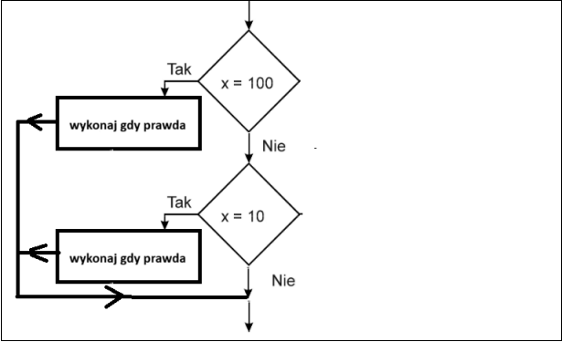
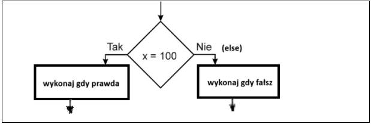

if (warunek_logiczny1)
{
// instrukcje jeśli warunek_logiczny1 prawdziwy
}
if (warunek_logiczny2)
{
// instrukcje jeśli warunek_logiczny2 prawdziwy
}

if (warunek_logiczny)
{
// instrukcje jeśli warunek_logiczny prawdziwy
}
else
{
// instrukcje jeśli warunek_logiczny fałszywy
}

Operator Opis Przykład == jest równe 2==3 wynik➤fałsz != nie jest równe 2!=3 wynik➤prawda > jest większe 25>3 wynik➤prawda < jest mniejsze 2<3 wynik➤prawda >= większe lub równe 25>=3 wynik➤prawda <= mniejsze lub równe 2<=3 wynik➤prawda
Operator Opis Przykład && i x=3 y=4 (x < 9 && y > 2) wynik➤prawda || lub x=3 y=4 (x==8 || y==6) wynik➤fałsz ! zaprzeczenie x=3 y=4 !(x==y) wynik➤prawda